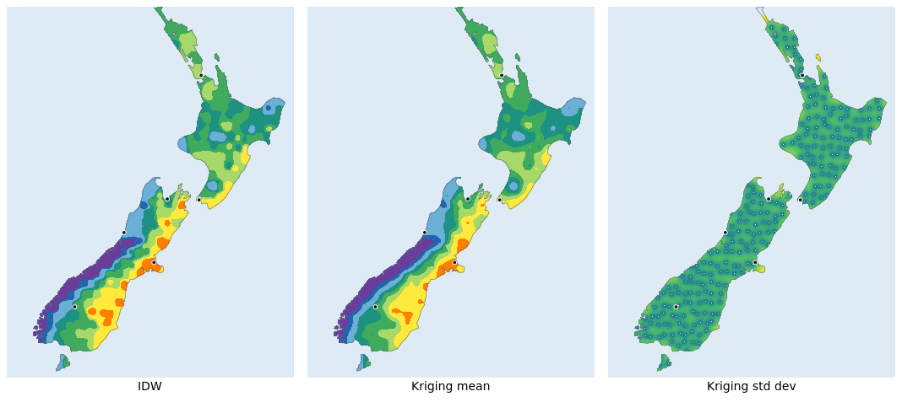
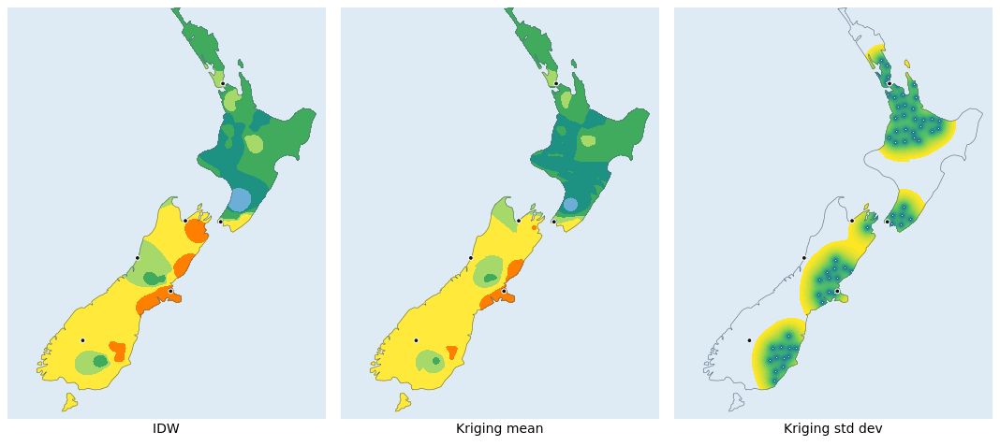

Kriging interpolation¶
Introduction¶
Added in version 8.8.
Kriging turns scattered vector features into a continuous raster surface, like Inverse distance weighted interpolation, but it is a geostatistical interpolator: it fits a model of the data’s spatial correlation and returns, together with the interpolated value, an estimate of how uncertain that value is.
It is implemented as a localized Nearest-Neighbor Gaussian Process (NNGP):
each output pixel is predicted by ordinary (or simple) kriging using only its
m nearest input samples, so cost scales with the neighbour count rather
than with a dense solve over the whole dataset.
It produces two raster bands, selected with PROCESSING "BANDS=n":
band 1: the predictive mean, the interpolated surface;
band 2: the predictive standard deviation (the kriging standard error), close to zero at the sample locations and rising across the gaps between them.
Configuration¶
Set the LAYER CONNECTIONTYPE parameter to KRIGING. As with Inverse distance weighted interpolation,
the samples come from another vector LAYER referenced by CONNECTION, and
each sample’s value is read from that layer’s STYLE SIZE [attribute]
binding (see the corresponding section of Kernel Density Estimation (Dynamic Heatmap)).
The interpolation takes the following parameters:
CONNECTION “layername” : reference to the NAME or GROUP of a LAYER to use as an input vector datasource. The referenced layer should be a TYPE POINT layer.
PROCESSING “KRIGING_MODEL=EXPONENTIAL” : the covariance model, one of
EXPONENTIAL(Matern nu=1/2, the default),GAUSSIANorSPHERICAL.PROCESSING “KRIGING_TYPE=ORDINARY” :
ORDINARY(the default) assumes an unknown, locally constant mean;SIMPLEassumes a known (zero or pre-detrended) mean.PROCESSING “KRIGING_NEIGHBORS=16” : the number of nearest samples
mused to predict each pixel. Larger values approach a full kriging solve at higher cost (roughlyO(m^3)per pixel). The default is 16.PROCESSING “KRIGING_RANGE=numeric” : the practical range of the covariance model, in pixels: the lag beyond which samples are effectively uncorrelated. The default auto-fits to about a third of the image diagonal.
PROCESSING “KRIGING_SILL=numeric” : the partial sill, the variance the covariance model reaches at large lags. The default auto-fits from the sample variance.
PROCESSING “KRIGING_NUGGET=numeric” : the nugget.
0(the default) makes the surface interpolate the samples exactly; a positive value smooths through them and stabilises the solve where samples are dense or coincident.PROCESSING “BANDS=1|2” : which output band to render:
1for the mean (the default),2for the standard deviation.
Worked example: two sampling networks¶
The example interpolates annual rainfall over New Zealand from the same field two ways, to show both what kriging adds over IDW and how the uncertainty band responds to the sampling layout. Each scenario is rendered as three panels: IDW, the kriging mean (band 1) and the kriging standard deviation (band 2).
Example files¶
Download the files into one directory and render the example as is; no preprocessing step and no external data are required.
nz_scenarios.map: the complete mapfile (the IDW, kriging-mean and kriging-SD layers for both scenarios, plus the point sources, land mask, coastline and city points).grid_nz_regular.csv: the dense, evenly spaced network (238 samples).grid_nz_clustered.csv: samples kept only near six cities (63 samples), leaving the West Coast, Fiordland and inland Southland unsampled.cities_major.csv: six cities, drawn as points for orientation.nz_coast.geojson: a simplified coastline, used for both the land mask and the outline.
Each sample’s value is the annual rainfall scaled to the 0-255 byte range
(rainfall in mm divided by 30); the kriging layer reads it through
STYLE SIZE [weight].
Mapfile¶
The complete mapfile is the download above. Its essential elements are the
point layer that holds the samples and the two kriging layers that read it.
KRIGING_RANGE and KRIGING_SILL are pinned so the two scenarios share one
covariance model and their SD bands stay comparable:
# the sample layer; each point's value is taken from SIZE [weight]
LAYER
NAME "grid_regular"
TYPE point
CONNECTIONTYPE OGR
CONNECTION "grid_nz_regular.csv"
CLASS
STYLE
SIZE [weight]
END
END
END
# band 1: the interpolated mean, drawn with the rainfall isohyet palette
LAYER
NAME "km_regular"
TYPE raster
CONNECTIONTYPE kriging
CONNECTION "grid_regular"
MASK "landmask"
PROCESSING "KRIGING_MODEL=EXPONENTIAL"
PROCESSING "KRIGING_TYPE=ORDINARY"
PROCESSING "KRIGING_NEIGHBORS=16"
PROCESSING "KRIGING_RANGE=40"
PROCESSING "KRIGING_SILL=2000"
PROCESSING "BANDS=1"
# CLASS with the rainfall isohyet ramp (see the full mapfile)
END
# band 2: the standard deviation, drawn with a viridis ramp
LAYER
NAME "sd_regular"
TYPE raster
CONNECTIONTYPE kriging
CONNECTION "grid_regular"
MASK "landmask"
PROCESSING "KRIGING_RANGE=40"
PROCESSING "KRIGING_SILL=2000"
PROCESSING "BANDS=2"
CLASS
STYLE
COLORRANGE "#440154" "#fde725"
DATARANGE 0 45
END
END
END
The clustered scenario uses the same layers reading grid_nz_clustered.csv.
Rendering¶
Render the six panels (each is a surface plus the coastline and city points), then combine them into the two triptychs with ImageMagick:
# six panels: IDW, kriging mean and kriging SD, for each scenario
for s in idw_regular km_regular sd_regular \
idw_clustered km_clustered sd_clustered; do
map2img -m nz_scenarios.map -l "$s coastline cities" -o "$s.png" -i png
done
# one triptych per scenario
montage -label 'IDW' idw_regular.png \
-label 'Kriging mean' km_regular.png \
-label 'Kriging std dev' sd_regular.png \
-tile 3x1 -geometry +8+8 idw_vs_kriging.png
montage -label 'IDW' idw_clustered.png \
-label 'Kriging mean' km_clustered.png \
-label 'Kriging std dev' sd_clustered.png \
-tile 3x1 -geometry +8+8 idw_vs_kriging_clustered.png
Scenario 1: a dense, even network¶
{kind=link}

IDW, kriging mean and kriging standard deviation from 238 evenly spaced samples.¶
With samples everywhere, IDW and the kriging mean agree closely (kriging is a little smoother), and both resolve the dominant west-east pattern: the Southern Alps wring out the prevailing westerlies, so the West Coast is very wet (the purple spine) while Canterbury sits in the rain shadow. The standard-deviation band is low and uniform across the country (every pixel is close to a measurement), so the surface is well supported everywhere.
Scenario 2: a clustered network¶
{kind=link}

The same three panels from 63 samples clustered near the cities (the dots).¶
Now the network covers only the populated areas. IDW and the kriging mean still look plausible, but both have lost the West Coast high: with no samples there, the South Island reads uniformly dry, and the mean alone gives no hint that anything is wrong. The standard-deviation band does: it stays dark over the city clusters (the dots) and turns bright over the unsampled West Coast, Fiordland and Southland. This is the practical value of kriging over IDW: it reports not only an estimate but also where that estimate is unsupported by data.
Technical notes¶
IDW’s per-sample bullseyes stand out against the kriging mean’s smoother bands because both are drawn with the same isohyet palette.
KRIGING_RANGEis pinned smaller than the gaps in the clustered network, which is why the clustered SD rises over those gaps. Left unset it auto-fits to about a third of the image diagonal.KRIGING_SILLis pinned to the sample variance so the SD scale is the same in both scenarios and the two SD panels stay comparable.Output bands are 8-bit (0 to 255). The mean is the value within the layer’s
DATARANGE; the standard deviation is in the same units, so the SD layer’sDATARANGEis the expected range of the standard error.
References¶
Datta, A., Banerjee, S., Finley, A. O., Gelfand, A. E. (2016). Hierarchical Nearest-Neighbor Gaussian Process Models for Large Geostatistical Datasets. Journal of the American Statistical Association 111(514), 800 to 812.
Vecchia, A. V. (1988). Estimation and Model Identification for Continuous Spatial Processes. Journal of the Royal Statistical Society: Series B 50(2), 297 to 312.